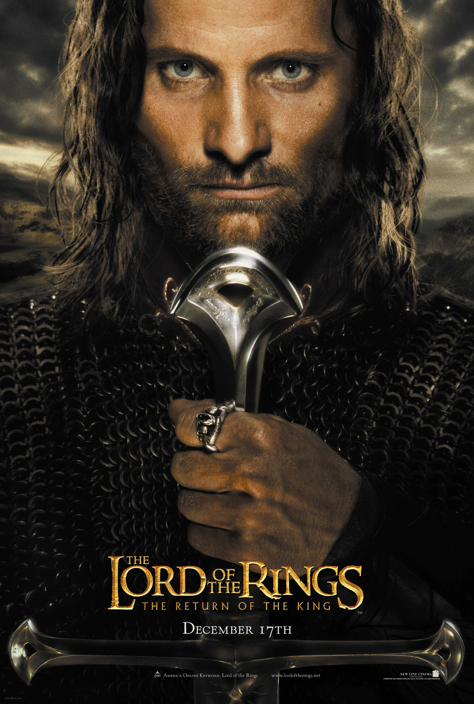

|

|
Yüzüklerin Efendisi Kralın Dönüşü
Yüzüklerin Efendisi son yüzyılın en çok okunan yüz kitabı arasında en başta geliyor. Türkçe basımının ilk iki kitabı Yüzük Kardeşliği ve İki Kule, bu ilginin evrenselliğini kanıtladı. Polisiye ya da bilimkurgu meraklıları, şiir, roman ve öykü okurları, hep birlikte Frodo, Sam, Merry, Pippin, Aragorn ve Gandalf'ın maceralarını okumaya, 'Orta Dünya'da yaşamaya başladılar.Üçüncü kitap Kralın Dönüşü ile birlikte Yüzüklerin Efendisi tamamlanıyor: Bu kısımda Karanlıklar Efendisi ile Yüzük Kardeşliği, iki cephede karşı karşıya geliyorlar. Frodo ve Sam ellerinde hepsine hükmedecek Tek Yüzük ile Mordor'un içine, karanlığın kalbine doğru bir yolculuk yaparken, diğerleri de karanlığa karşı son cephe olan Gondor'da umutsuz bir savunmaya girişiyorlar...
Ana Sayfa
|